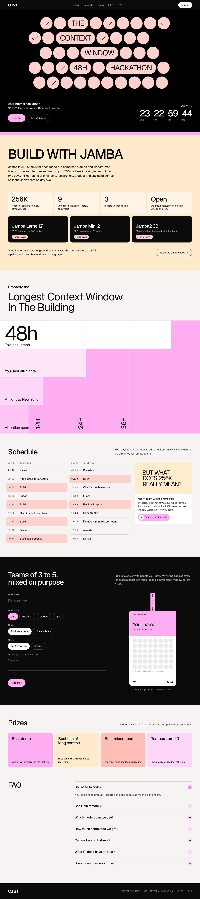
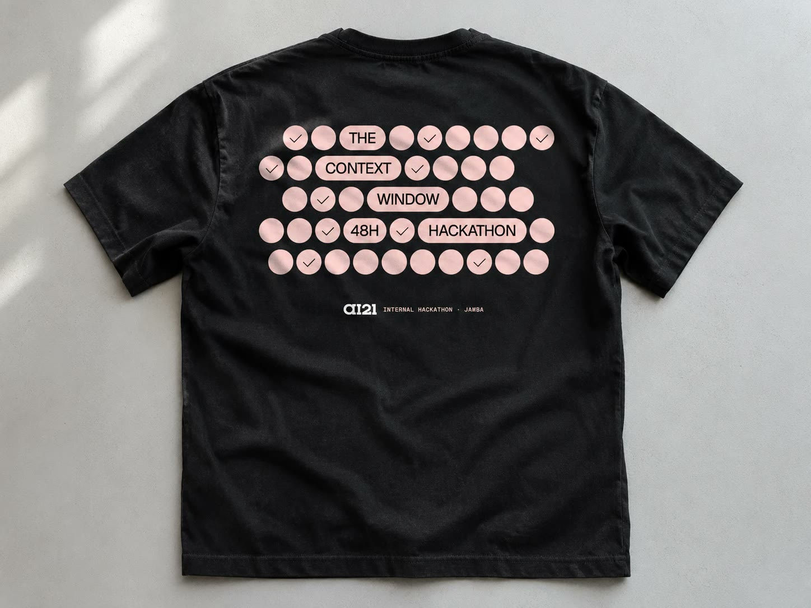

Video and landing page · AI21 Labs
Jamba Hackathon
A video to promote a hackathon on LinkedIn for the Jamba release, and the hackathon's landing page.
- Client
- AI21 Labs
- Role
- Motion · web design
- Scope
- LinkedIn video · landing page · swag
Landing page
The landing page, recorded in the browser

Swag
